Website bán trang sức ngọc phỉ thúy được làm riêng cho ngành ngọc: giúp khách tin tưởng, chọn đúng món, thanh toán dễ dàng – và giúp cửa hàng bán an toàn, không lo bán trùng món độc bản.
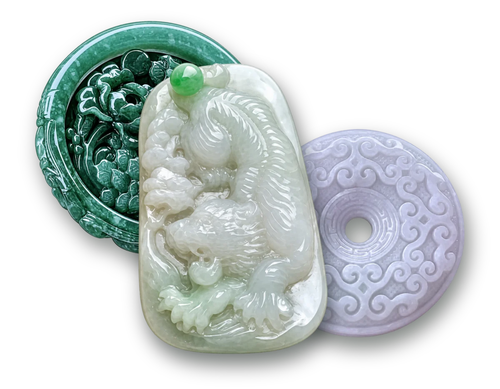
Mỗi viên ngọc chỉ có một chiếc. Có khách đặt là món đó được giữ riêng tự động – người khác không đặt được nữa.
Khách chưa quyết ngay? Cọc 10% qua mã QR để giữ riêng món ngọc 24 giờ, có chính sách cọc rõ ràng.
Mã QR có sẵn số tiền và nội dung – khách chỉ cần quét. Tiền về là đơn tự chuyển sang “Đã thanh toán”.
Cọc hoặc thanh toán xong, khách tải phiếu (PDF / ảnh) làm bằng chứng. Phiếu có mã QR để kiểm tra thật – giả.
Nhập mã đơn + số điện thoại là xem được trạng thái và tải lại phiếu – kể cả sau nhiều tháng.
Khách nhập mã trên giấy kiểm định để xem ngay kết quả và đúng món ngọc – an tâm ngọc thật.
Phóng to từng vùng ảnh để xem vân, độ trong; có video ngọc dưới ánh sáng thật. Trên điện thoại chạm để soi.
Khách nhập số đo bàn tay hoặc ngón tay – website tự tính ni và chỉ hiện những món vừa.
Nhập năm sinh để biết mệnh và màu ngọc hợp. Trả lời 3 câu hỏi là có gợi ý quà đúng người, đúng dịp.
Giỏ hàng và đặt hàng gọn trên một trang, nút “Đặt hàng” luôn trong tầm tay, banner thiết kế riêng cho điện thoại.
Quét mã bằng camera để mở bản chạy thử: vienngocphuong-demo.netlify.app. Bản chạy thử dùng dữ liệu mẫu – có thể đặt hàng, giữ hàng, xem phiếu thử mà không phải chuyển tiền thật.
Khách mua ngọc qua mạng thường có ba nỗi lo: ngọc có thật không, món nào hợp với mình hoặc người được tặng, và chuyển tiền rồi có chắc chắn không. Website Viên Ngọc Phương được làm để trả lời cả ba – bên cạnh đầy đủ chức năng của một trang bán hàng.
Giấy kiểm định tra được, video ngọc thật, soi vân, phiếu xác nhận có mã kiểm tra, khách tự tra cứu đơn.
Tự giữ món khi có khách đặt, giữ hàng bằng tiền cọc, tự mở bán lại khi khách không thanh toán.
Tính ni vòng, ni nhẫn, tra mệnh chọn màu ngọc, gợi ý quà theo người nhận và ngân sách, đặt lịch xem tận tay.
Báo đơn qua Telegram, xác nhận bằng một lần bấm, lưu đơn ra Excel, chạy trên hosting thông thường.
Mỗi viên ngọc tự nhiên chỉ có một chiếc. Bán qua mạng, điều cửa hàng sợ nhất là hai khách cùng chuyển tiền cho một món. Website xử lý việc này tự động.
Hai khách cùng ưng một món, cùng chuyển tiền – cửa hàng phải xin lỗi và hoàn tiền một người.
Ngay khi khách bấm đặt hàng, món độc bản được giữ riêng cho khách đó. Khách khác vào xem sẽ thấy rõ “Một khách hàng vừa đặt mua món này” hoặc “Đã có khách đặt cọc” – và không đặt trùng được.
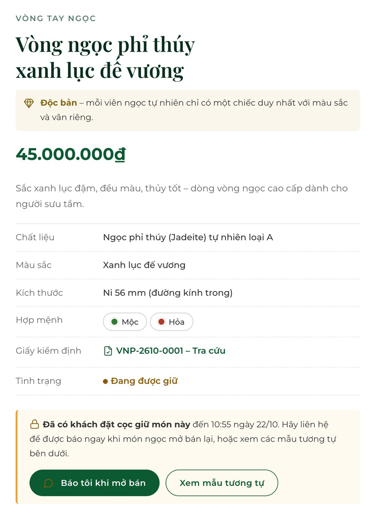
| Trường hợp | Website tự làm gì |
|---|---|
| Khách đặt & chuyển khoản | Giữ món 60 phút chờ tiền về. Đã nhận tiền → giữ tới khi giao hàng. |
| Khách đặt trả tiền khi nhận (COD) | Giữ món tối đa 24 giờ để cửa hàng gọi xác nhận. Đã xác nhận → giữ tới khi giao. |
| Khách không thanh toán | Hết giờ, món tự mở bán lại – không bị khóa mãi. |
| Khách chuyển tiền quá muộn | Trang của khách báo cửa hàng sẽ liên hệ đổi mẫu hoặc hoàn tiền; cửa hàng nhận cảnh báo ngay. |
Món ngọc vài chục triệu, khách cần thời gian cân nhắc – nhưng sợ người khác mua mất.
Với món từ 10 triệu (cửa hàng tự chọn mức), khách bấm “Giữ hàng 24 giờ” và đặt cọc 10%. Chỉ 3 bước:
Xác nhận cọc: cửa hàng bấm nút trong tin báo, hoặc tự động khi tiền vào tài khoản Cần cài đặt
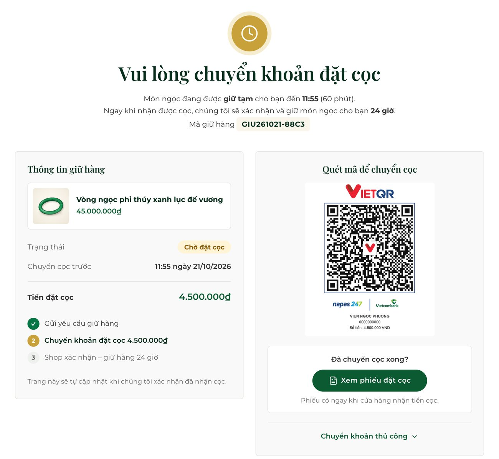
| Thời gian giữ | 24 giờ kể từ khi cửa hàng nhận cọc, giá giữ nguyên; gia hạn miễn phí 1 lần thêm 24 giờ. |
| Sản phẩm không đúng mô tả | Hoàn 100% tiền cọc. |
| Cửa hàng hủy / bán cho người khác | Hoàn tiền cọc và trả thêm một khoản bằng tiền cọc. |
| Khách đổi ý, báo trước hạn | Tiền cọc thành phiếu mua hàng, dùng trong 6 tháng cho mọi sản phẩm. |
| Khách không báo, không mua | Tiền cọc thuộc cửa hàng, món ngọc được mở bán lại. |
| Hoàn tiền | Trong 3 ngày làm việc, không trừ phí, về đúng tài khoản đã chuyển cọc. |
Các con số do cửa hàng tự chỉnh. Chính sách soạn theo Bộ luật Dân sự 2015 – nên nhờ luật sư hoặc kế toán xem lại trước khi dùng thật.
Khách chọn trả tiền khi nhận hàng (COD) hoặc chuyển khoản. Với chuyển khoản, khách luôn biết đơn của mình đang ở bước nào:
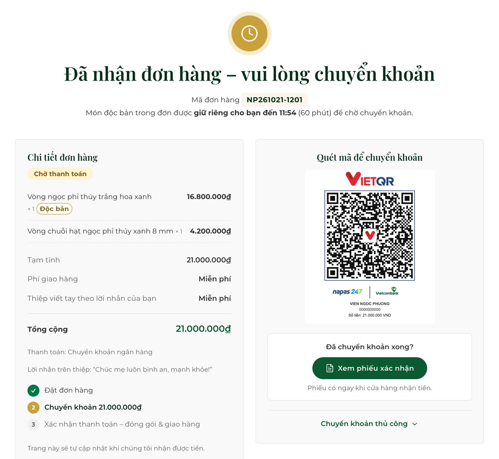
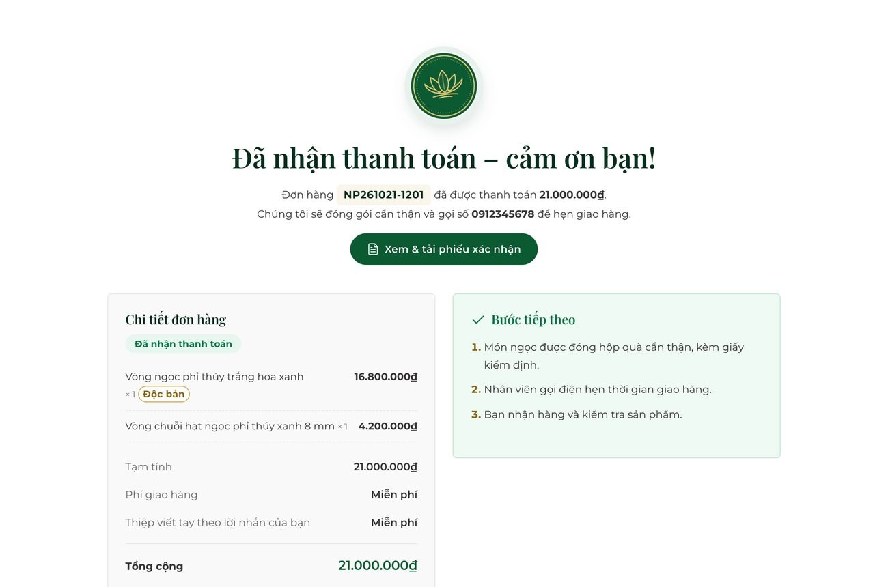
Kết nối dịch vụ theo dõi giao dịch ngân hàng: tiền về đúng mã đơn là tự đánh dấu đã thanh toán – cửa hàng không phải mở app ngân hàng đối chiếu từng khoản.
Cửa hàng bấm “Xác nhận đã nhận đủ tiền” trong tin báo đơn hàng – trang của khách cập nhật ngay.
Chuyển vài chục triệu cho cửa hàng online, khách cần một tờ giấy làm bằng chứng.
Khi cửa hàng nhận cọc, nhận tiền hoặc xác nhận đơn COD, website tự lập phiếu xác nhận cho khách:
Cửa hàng chưa xác nhận thì nút “Xem phiếu” hiện trạng thái chờ, và tự chuyển thành phiếu ngay khi cửa hàng xác nhận.
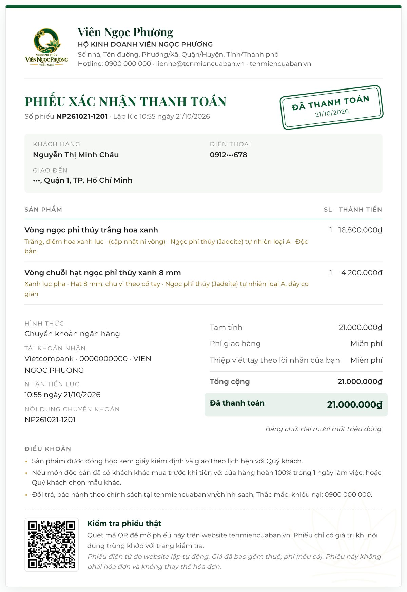
Khách đóng trang, không để lại email – vài tháng sau muốn xem lại đơn.
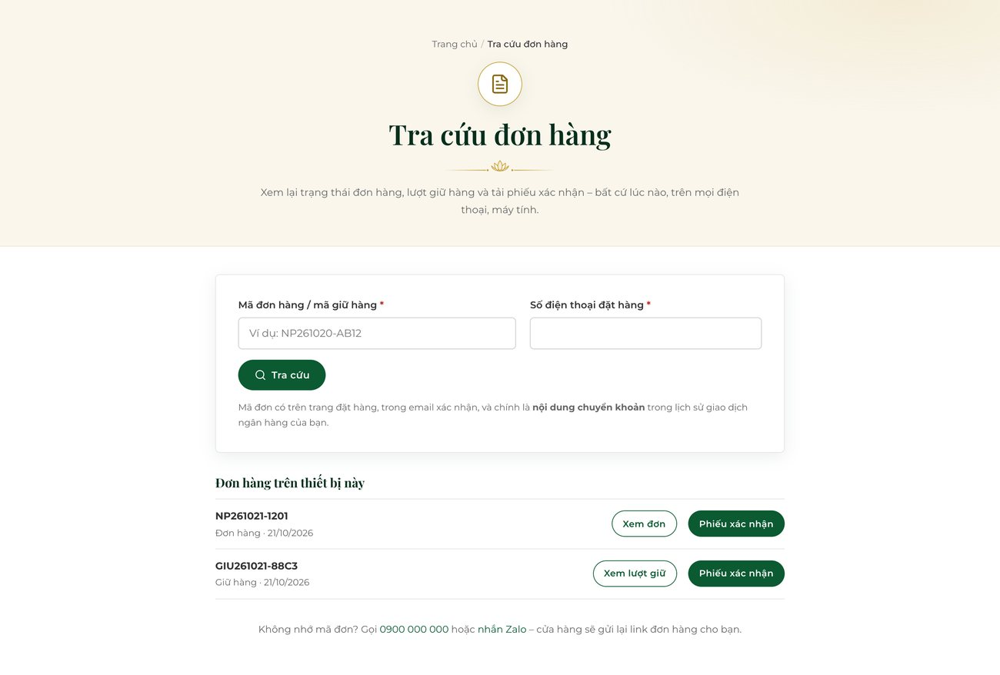
Khách sợ nhất là mua phải ngọc giả, ngọc đã tẩy hoặc nhuộm.
Khách nhập mã in trên giấy kiểm định, website hiện ngay ảnh giấy, kết luận (ví dụ: ngọc phỉ thúy tự nhiên loại A), màu, kích thước, nơi kiểm định và đúng món ngọc tương ứng.
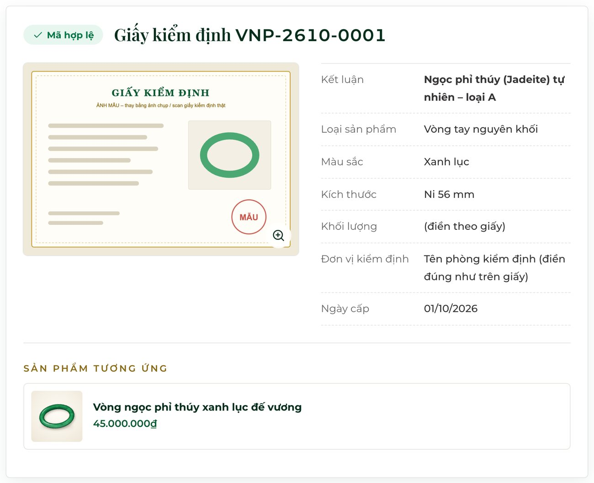
Độ trong (“thủy”) và vân ngọc rất khó thấy qua ảnh chụp thường.
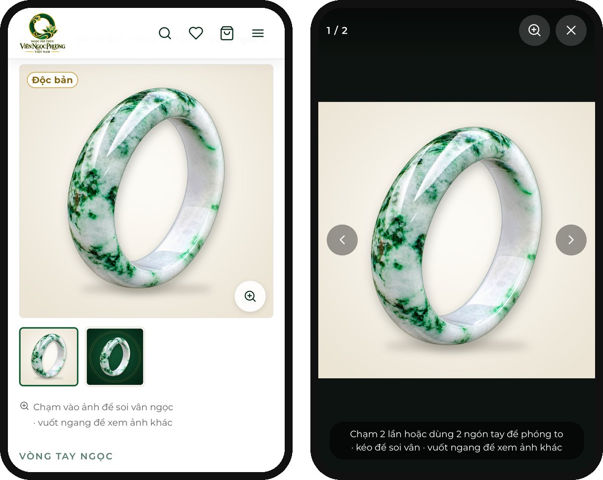
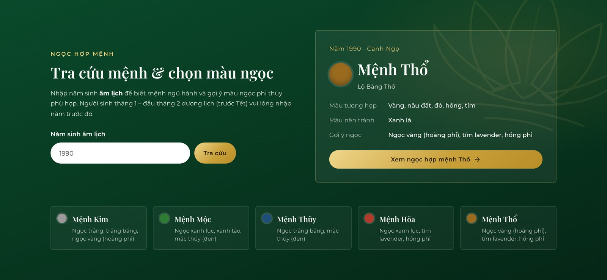
“Tay tôi đeo ni bao nhiêu?” – câu khách hỏi nhiều nhất khi mua vòng và nhẫn.
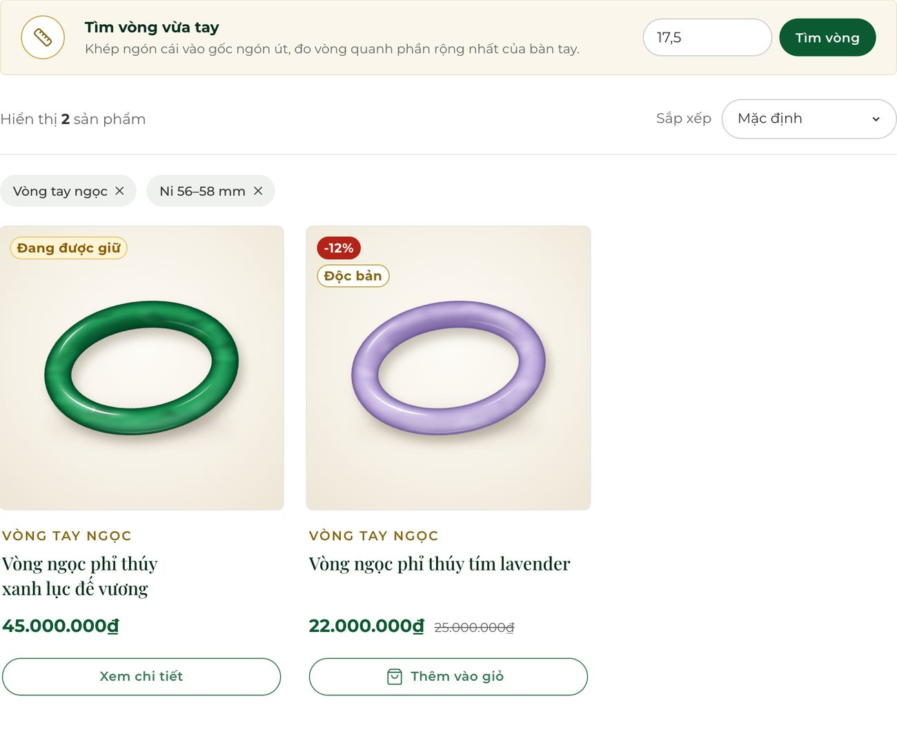
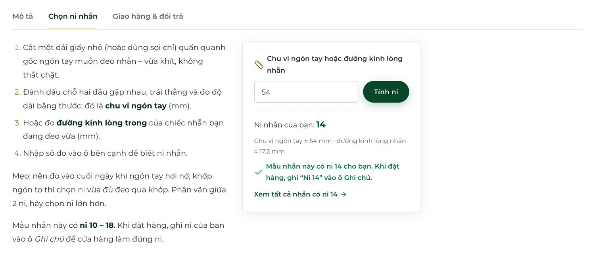
| Ni nhẫn | 8 | 10 | 12 | 14 | 16 | 18 | 20 | 22 |
|---|---|---|---|---|---|---|---|---|
| Chu vi ngón tay (mm) | 48,2 | 50,3 | 52,4 | 54,5 | 56,6 | 58,6 | 60,7 | 62,8 |
| Đường kính lòng nhẫn (mm) | 15,3 | 16,0 | 16,7 | 17,3 | 18,0 | 18,7 | 19,3 | 20,0 |
Theo bảng ni Việt Nam: mỗi ni hơn kém khoảng 1 mm chu vi. Cửa hàng nên đối chiếu với bảng ni của thợ làm nhẫn.
Phần lớn khách mua ngọc để tặng – nhưng không biết chọn món nào.
Khách trả lời 3 câu hỏi: tặng ai, năm sinh người nhận, ngân sách. Website gợi ý những món đúng dịp, hợp mệnh người nhận (món màu kỵ mệnh bị loại) và vừa túi tiền.
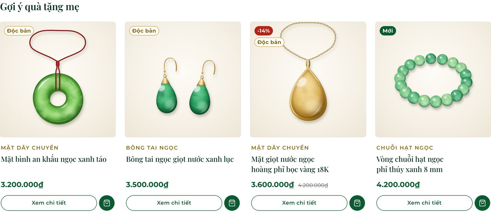
6 bộ sưu tập quà theo dịp có trên menu và trang chủ:
Món giá trị cao, khách muốn xem và đeo thử trước. Khách chọn ngày, khung giờ và món quan tâm – cửa hàng nhận tin để chuẩn bị sẵn mẫu theo ngân sách, ni tay.
Ngay trong giỏ hàng: thiệp viết tay (nhập lời nhắn), hộp quà cao cấp, giao hỏa tốc 2–4 giờ nội thành. Phí tự cộng vào tổng tiền.
Mục ảnh và cảm nhận của khách đã mua trên trang chủ. Tự ẩn khi chưa có – website không bao giờ hiện cảm nhận “dựng sẵn”.
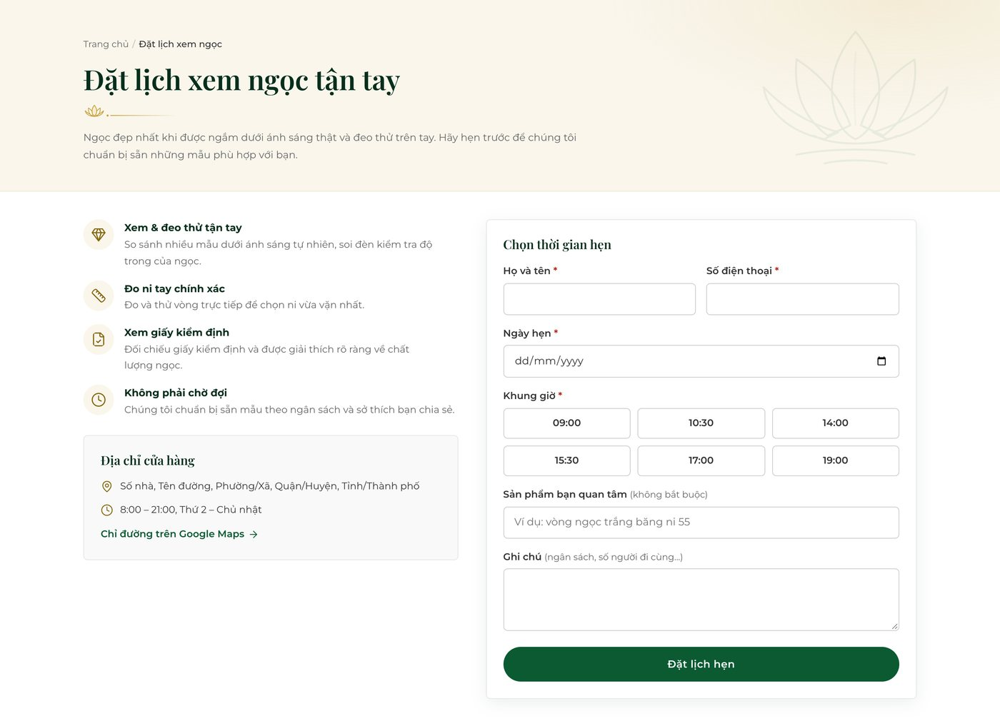
Phần lớn khách xem hàng qua Facebook, Zalo trên điện thoại. Giao diện điện thoại được thiết kế và kiểm tra riêng trên iPhone và Android – chữ không vỡ dòng, nút không bị che, không phải kéo ngang.
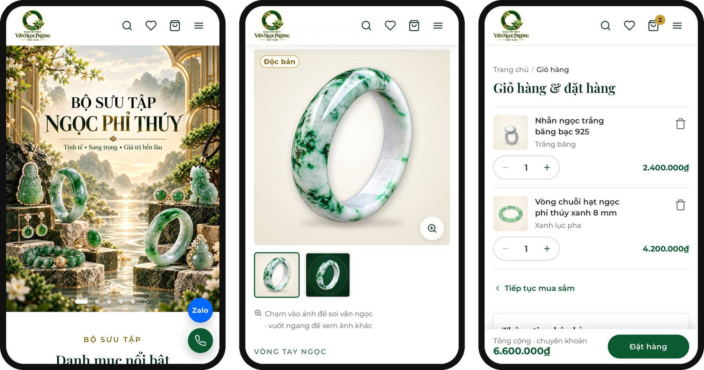
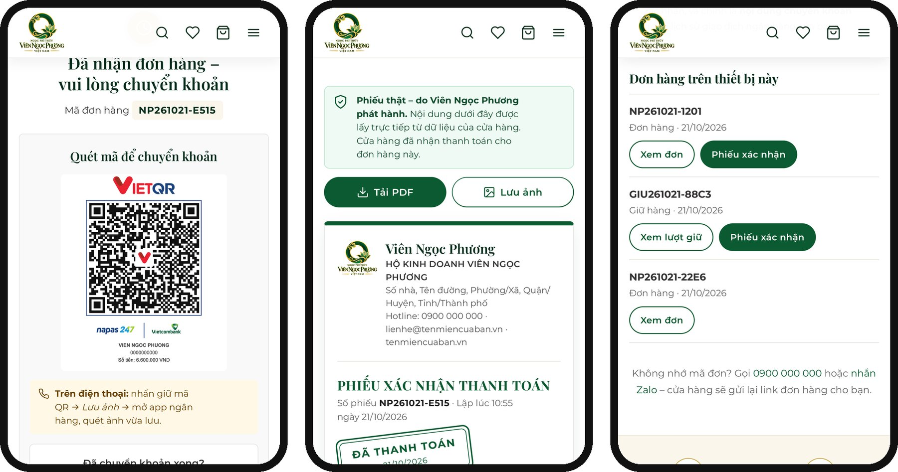
Có đơn hàng, yêu cầu giữ hàng, lịch hẹn, tin nhắn liên hệ hoặc tiền vào là cửa hàng nhận tin qua Telegram (miễn phí) và email. Tạo bot Telegram chỉ mất khoảng 5 phút.
Mỗi tin báo kèm link quản lý riêng – mở trên điện thoại là thao tác được:
Link có mã bảo mật riêng từng đơn – người ngoài không mở được.
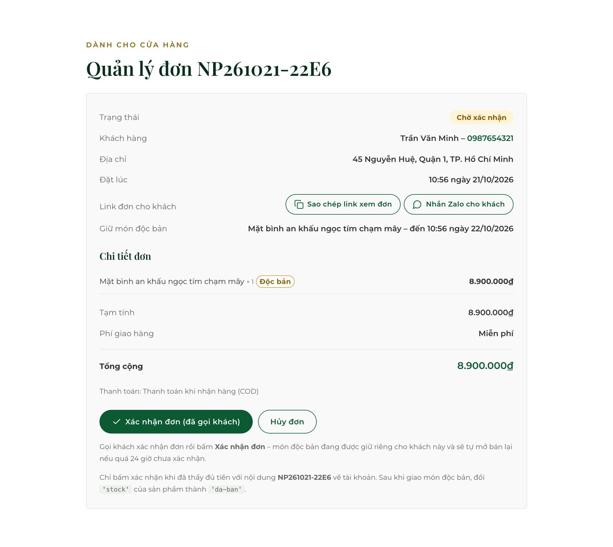
Đơn hàng, giữ hàng, lịch hẹn, liên hệ, giao dịch được lưu thành file theo tháng, mở bằng Excel. Thư mục dữ liệu được khóa, người ngoài không xem được.
Kết nối dịch vụ theo dõi giao dịch ngân hàng: tiền về đúng mã là tự xác nhận cọc, tự đánh dấu đơn đã thanh toán; chuyển thiếu thì báo cửa hàng.
Đơn hàng giữ 2 năm (đổi được), phiếu xác nhận lưu lâu dài – đủ cho bảo hành và đối chiếu.
Chạy trên hosting thông thường tại Việt Nam, không cần cơ sở dữ liệu – chi phí duy trì thấp.
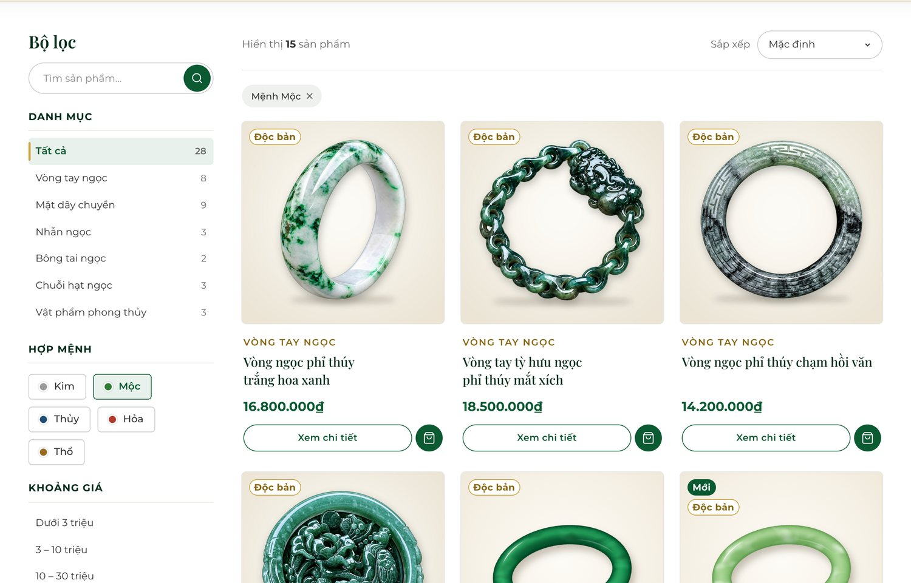
| Tiếp thị & Google | Mô tả | Trạng thái |
|---|---|---|
| Tối ưu tìm kiếm Google | Tiêu đề, mô tả riêng từng trang; dữ liệu sản phẩm (giá, tình trạng) để Google hiển thị đẹp hơn. | Đã hoạt động |
| Sơ đồ trang (sitemap) | Tự cập nhật khi thêm sản phẩm, bài viết; khai báo một lần với Google. | Đã hoạt động |
| Chia sẻ Facebook / Zalo | Link sản phẩm khi chia sẻ hiện đúng ảnh, tên và giá. | Đã hoạt động |
| Cẩm nang & chính sách | Bài viết kiến thức ngọc, 6 trang chính sách (bảo hành, đổi trả, vận chuyển, thanh toán, đặt cọc, bảo mật). | Đã hoạt động |
| Google Shopping miễn phí | Sản phẩm hiện kèm ảnh và giá khi khách tìm trên Google. | Cần cài đặt |
| Đo lường quảng cáo | Google Analytics, Facebook Pixel, TikTok Pixel: ghi nhận xem sản phẩm, thêm giỏ, mua hàng. | Cần cài đặt |
| Zalo OA | Mời khách “Quan tâm” trang Zalo của cửa hàng để nhận hàng mới, ưu đãi. | Cần cài đặt |
| Việc cần chuẩn bị | Khi đưa website lên hosting |
|---|---|
| Thông tin cửa hàng | Hotline, Zalo, email, địa chỉ, tài khoản ngân hàng nhận tiền chính thức, thông tin in trên phiếu xác nhận. |
| Sản phẩm & nội dung | Ảnh, giá, ni vòng – ni nhẫn, video, giấy kiểm định thật; banner máy tính và banner điện thoại. |
| Nhận tin & thanh toán | Tạo bot Telegram, email theo tên miền; (tùy chọn) đăng ký dịch vụ tự xác nhận tiền vào. |
| Google & quảng cáo | Bật https, khai báo với Google, Google Merchant Center, mã Analytics/Pixel, Zalo OA. |
| Pháp lý | Thông báo website thương mại điện tử với Bộ Công Thương (online.gov.vn); nhờ kế toán xem lại chính sách cọc và thuế. |
Giao diện bấm chọn để cửa hàng tự sửa mọi chữ, con số, hình ảnh trên website – sản phẩm, banner, giấy kiểm định, chính sách, thông tin trên phiếu; xem và xử lý đơn hàng, giữ hàng, lịch hẹn; chọn ngân hàng nhận tiền; bật/tắt VAT trong báo giá – không cần sửa file.
Quét mã hoặc mở vienngocphuong-demo.netlify.app – thử đặt hàng, giữ hàng, tải phiếu xác nhận với dữ liệu mẫu.